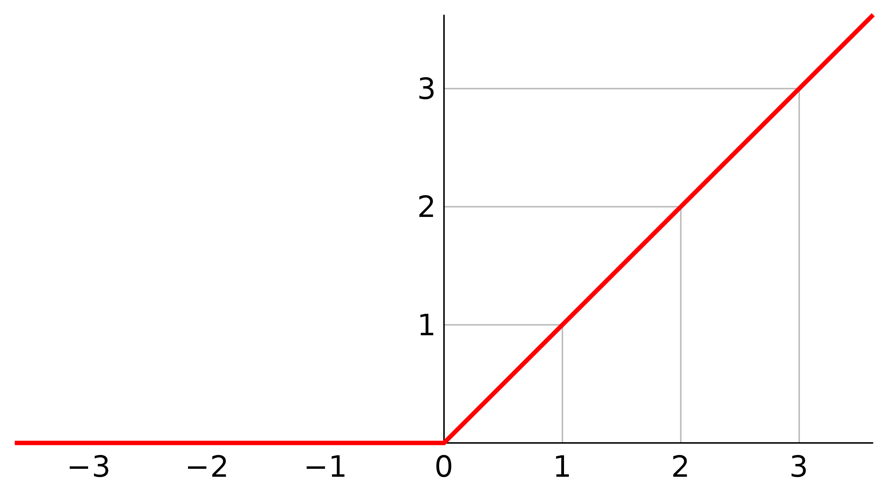

What is bias?
What is bias?
但凡对于神经网络有过一定了解的人，就不会不知道bias。bias为分界线提供了一个灵活的变化。假设现在使用的激活函数是ReLU即整流线型激活函数，当加权和\( \sum_{i = 1}w_{i}*x_{i} + bias \)进入到达神经元时，这个函数的行为如下图所示  显然，施加了ReLU激活函数的神经元阈值为0，那么如果我们在训练的时候发现，0并不是一个最好的阈值，1才是一个最好的阈值，那该怎么办呢？当这种情况发生，神经网络会自适应调整bias的值，把bias的值变成-1，这样通过改变bias的大小的同时调整了函数的阈值，使得nn的适应性更加强。 bias偏差值和学习率一样，初始化的时候随机生成，我们训练神经网络，就是通过多次迭代，找出现有训练集下的能够最大化模型预测精准度的参数的值。在计算加权和的时候，为了确保bias能够随着权重在每一次的迭代中被调整到，神经网络都是把bias当作是一个不存在的输入\(x_0(= 1) \)的权重，也就是说，\( \sum_{i=0}w_{i}*x_{i} \)是等价于\(\sum_{i = 1}w_{i}*x_{i} + bias \).